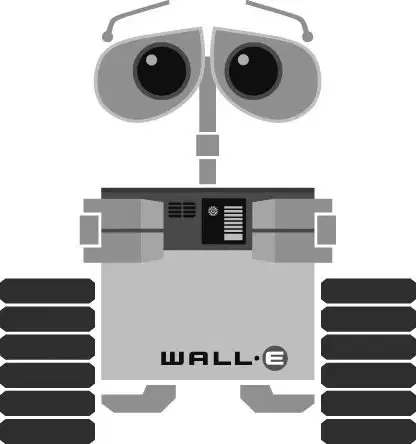

戈法一离开房间，伊芙就冲到一个气闸室前。她挤进气闸室，按下一个按钮，猛地将自己投入太空。
逃生舱内，吓坏了的瓦力被猛地甩到了后壁上。电脑汇报说逃生舱到达巡航速度时，瓦力和那株植物都摔落在了地板上。
“您现在可以打开各种电子装置了。”电脑说道。
瓦力试图弄清楚自己的方位。他向舱门外望去，只见“功理”号在远处变得越来越小。
他驶到飞行员的座位前，用力将操纵杆向后拉。什么都没有发生。他疯狂地同时按下操纵台上所有的按键。
灯光闪烁。氧气面罩从天花板上落下。雨刮器启动，舱体两侧也都部署好了导弹。
瓦力不停地按着按键。然后他按了一个错误的按键——“自我毁灭”按键。“逃生舱将在十秒钟后自我毁灭。”电脑镇静地说道。“您现在可以在舱内自由移动。十，九，八……”
瓦力恐慌了。他拼命地四处寻找逃生方法，终于看见了一个灭火器和舱门上紧急出口的操纵杆。他心里怀抱着最好的希望，抓住灭火器，用力猛拉操纵杆。在他脚下的逃生舱爆炸成一团火球之时，他被吸入了太空之中。
伊芙在远处看见逃生舱爆炸了。
“瓦力。”她呻吟道，心中极为震惊。她只是想把这个小机器人送回家，而不是把他炸成碎片！
突然，瓦力“嗖”的一声从她身边飞过。他还活着！他借助灭火器的推力，正朝着“功理”号飞去。
伊芙转身赶上了他。
瓦力自豪地打开他胸部的隔间给伊芙看那株植物。他拯救了它！伊芙很高兴。她朝瓦力倚去，两人的脑袋间闪过一道能量的火花，这是一个机器人的亲吻。
很快，他们就肩并肩、步调一致地画着八字形翱翔于太 空中。
在飞船内，玛丽正盯着窗外看。她看见瓦力和伊芙在银白色的群星间舞动。“噢——”这个人类兴奋地说道。
就在这时，约翰的悬浮椅恰巧飘过。玛丽伸出手关掉了约翰扶手上的电子设备。他眨了眨眼睛，四处张望。
“嘿！”玛丽对他喊道。“嘿，快看！”
她指向窗户。“看那个！”她大喊道，吓了约翰一跳。
“什——”他看向自己周围。“啊？”
没有了电子装置的约翰很困惑，他瞄了一眼玛丽，然后向飞船的窗外瞥去。窗外展现的是银河的壮丽景色。和玛丽一样，他也立刻看见了在太空滑翔的瓦力和伊芙，就好像他们在星星上跳舞一样。
“噢——”约翰惊叹道。他认出了那个小机器人。
玛丽和约翰都向窗前又凑近了一些观看着。瓦力和伊芙飞出视野之后，约翰把手伸向下面扶手，把上面的各种电子装置都重新打开。但是玛丽的手仍在那里。两只手碰到了一起。约翰转向玛丽，两人的视线相交。
“你好。”约翰微笑着说道。
“你好。”玛丽也微笑着回应道。
